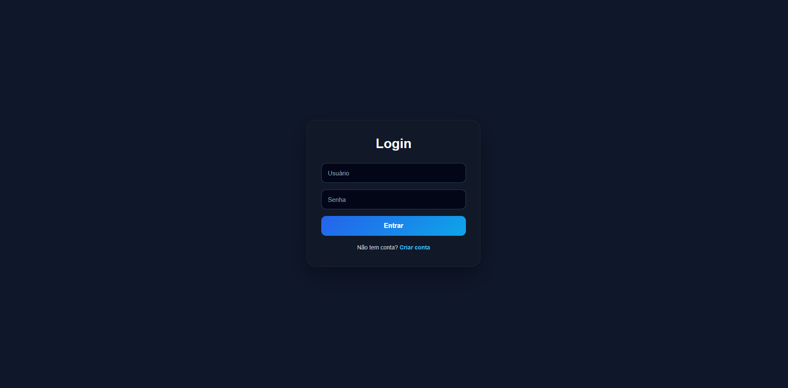
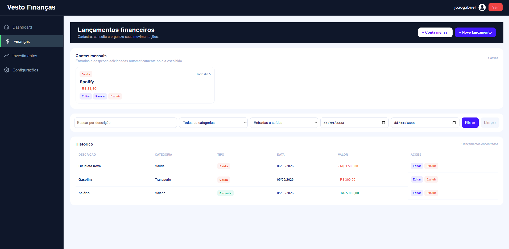
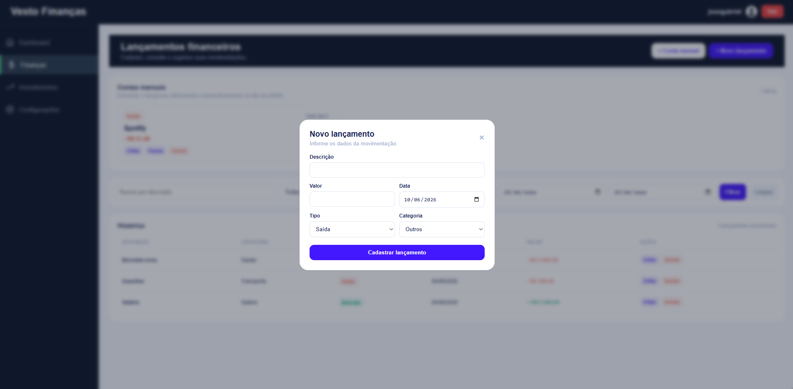
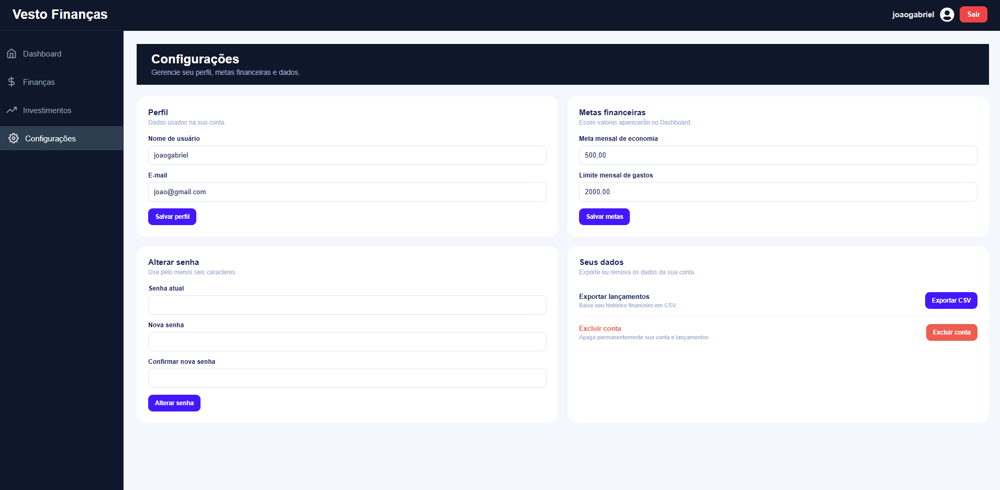

Sobre o projeto
O Vesto está em processo de desenvolvimento para reunir o controle financeiro e o acompanhamento de investimentos em uma experiência web integrada, com API no backend e uma interface moderna no frontend.
Plataforma web em processo de desenvolvimento
Plataforma para gerenciamento de finanças pessoais e investimentos, construída com Django REST Framework e React.

O Vesto está em processo de desenvolvimento para reunir o controle financeiro e o acompanhamento de investimentos em uma experiência web integrada, com API no backend e uma interface moderna no frontend.
Interface da plataforma
Uma visão das principais telas criadas para acompanhar resultados, organizar movimentações e configurar metas pessoais.



